01 · Product
一只会互动的 AI 宠物犬。
拉哆哆可以做触摸反馈、动作演示与语音互动。对礼赠渠道来说，它不是普通毛绒，而是开箱就能演示、能被拍视频、能被采购方记住的“会动礼品”。
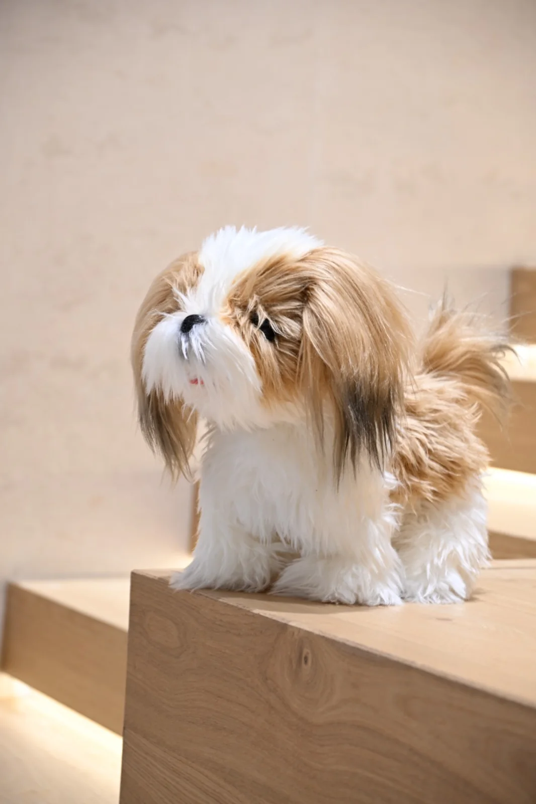
AI Gift Solution · 200 元以内礼赠渠道
面向礼赠品渠道的 AI 陪伴礼品方案。以拉哆哆 AI 宠物犬为主推 SKU，可扩展到企业 IP、文创吉祥物和活动伴手礼，在 200 元以内预算区间内配置互动、语音、动作与包装定制。
礼赠品渠道最怕“概念很好、落地很虚”。拉哆哆的价值，是把毛绒礼品做成客户能现场演示、能短视频传播、能按预算配置、能进入批量合作讨论的 AI 互动产品。
端侧 AI 语音交互、硬件工程与产品落地经验。
采购、代销、战略合作与生产合作材料可脱敏核验。
赛事、展会、媒体与算法备案材料形成外部背书。
实拍演示、包装样机、活动互动和供应链过程可展示。
01 · Product
拉哆哆可以做触摸反馈、动作演示与语音互动。对礼赠渠道来说，它不是普通毛绒，而是开箱就能演示、能被拍视频、能被采购方记住的“会动礼品”。

02 · Shape
现有素材覆盖西施犬与拉布拉多犬形方向。后续可按预算、品牌色、吊牌、服饰、包装与渠道人群，定制不同犬种或企业 IP 形象。
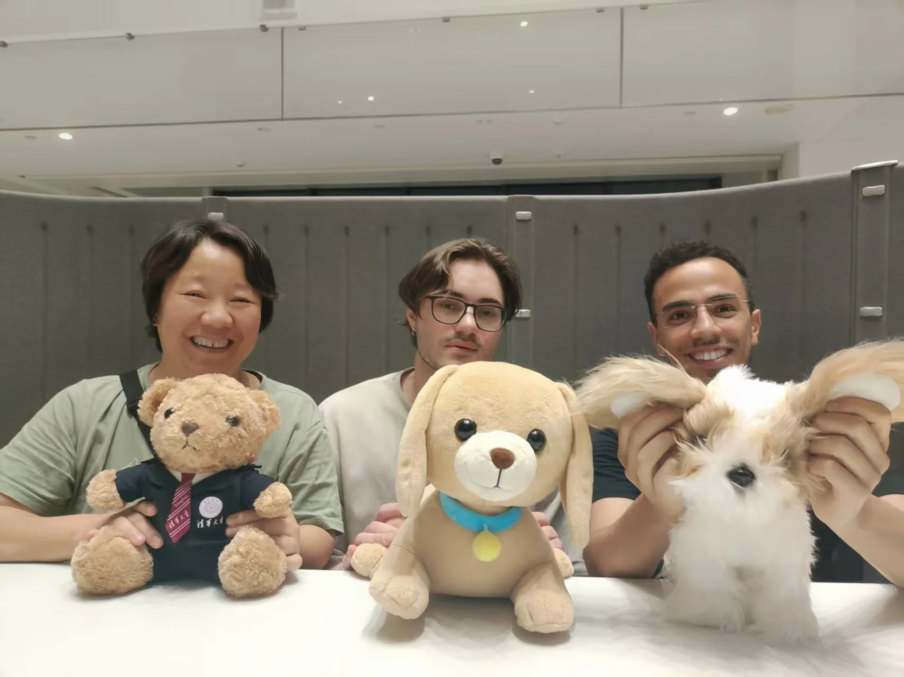
03 · Family
同一套语音互动、端侧智能与硬件方案，可以迁移到宠物犬、清华熊、文创吉祥物、节庆礼品和企业定制毛绒上，适合长期做 SKU 矩阵。
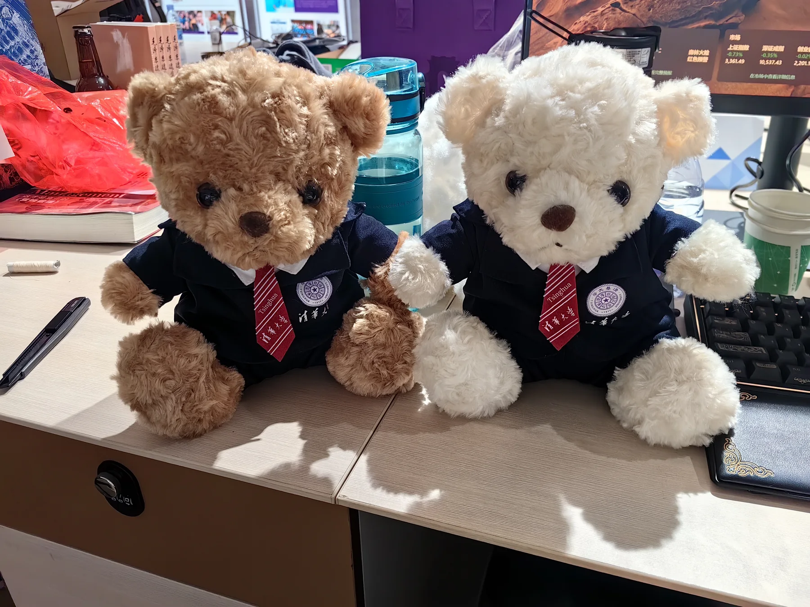
For Gift Channel
可按预算拆分语音、动作、传感、包装与定制深度，先做可演示小批量，再进入批量报价。
会走、会聊、会被摸，有天然短视频传播点，比普通礼品更容易被采购方记住。
犬种、服饰、吊牌、语音欢迎词、包装卡片均可换，适合企业活动、文创、教育与儿童场景。
已有实拍演示、儿童互动、展会展示、合同与公司 BP，不是停留在概念图。
Partnership Readiness
礼赠品渠道需要的不只是一个好看的样品，而是一套能持续沟通、打样、报价、交付和复盘的合作链路。
围绕客户预算和渠道人群，确认外观、语音内容、包装、吊牌、服饰和功能配置。
用实物样机、核心视频和现场演示验证互动感，先让采购方看懂价值，再谈数量。
结合生产合作、采购/代销合同与脱敏材料核验，降低渠道客户首次合作的不确定性。
Video Proof
默认播放 68 秒总览片，也可以切换查看抚摸互动、自主行走、AI 对话、展会讲解和儿童真实互动。
Case Materials
图片、视频和材料共同证明：这不是一张产品图，而是一组已经被验证过的互动产品、活动场景和商务合作基础。
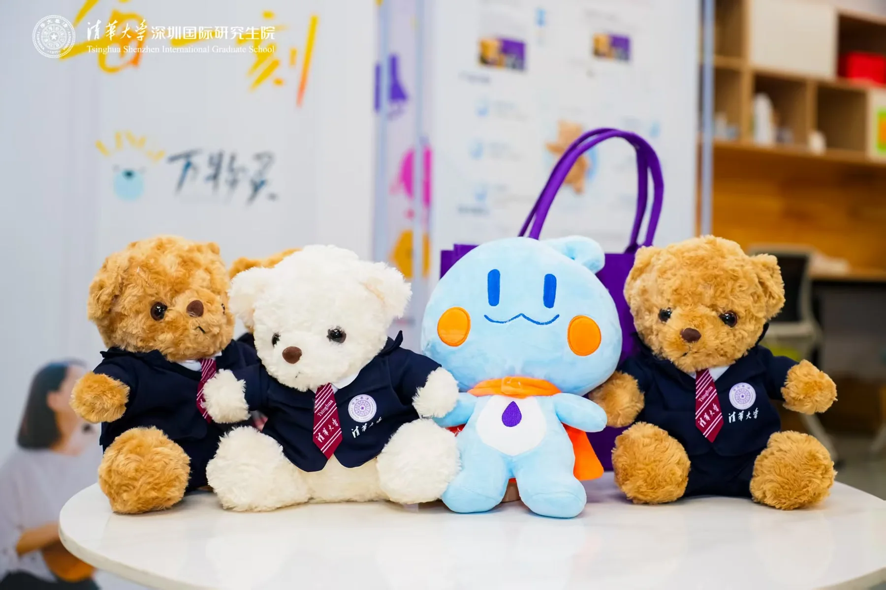
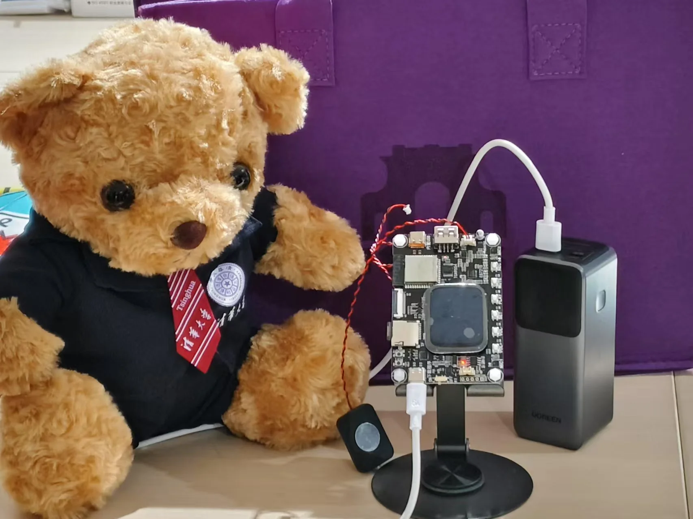
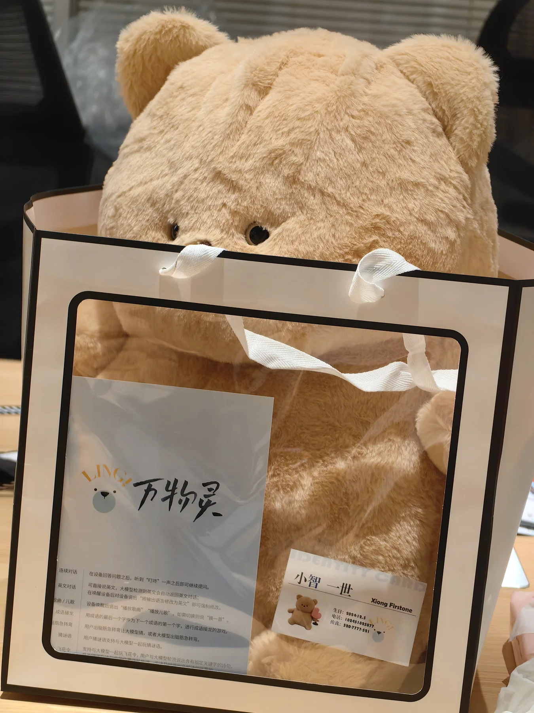
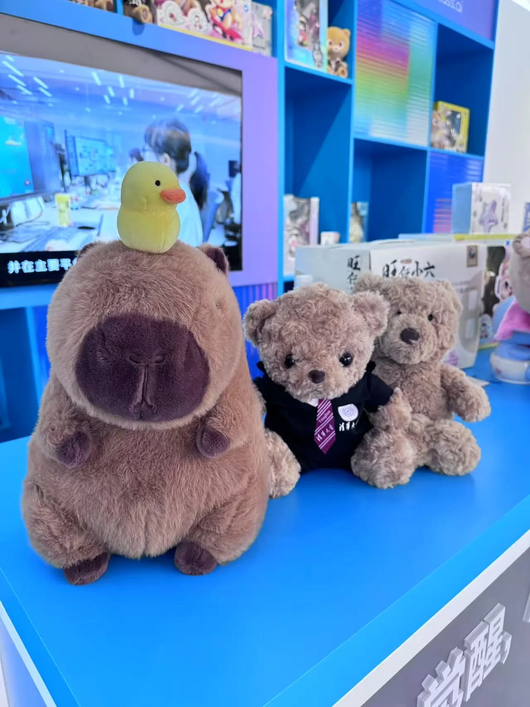
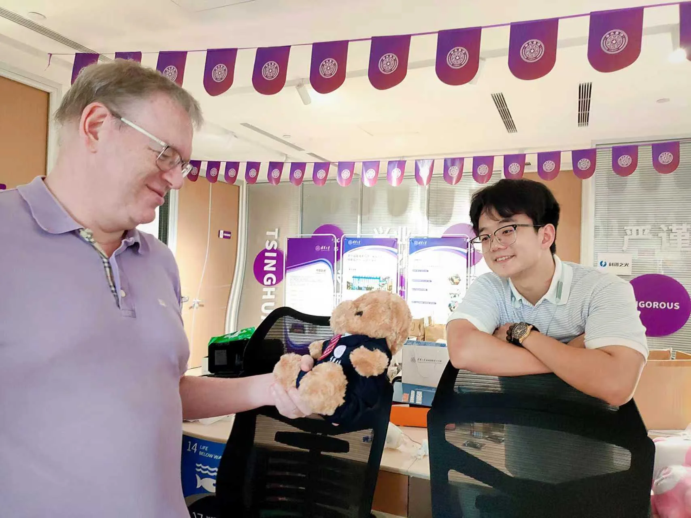
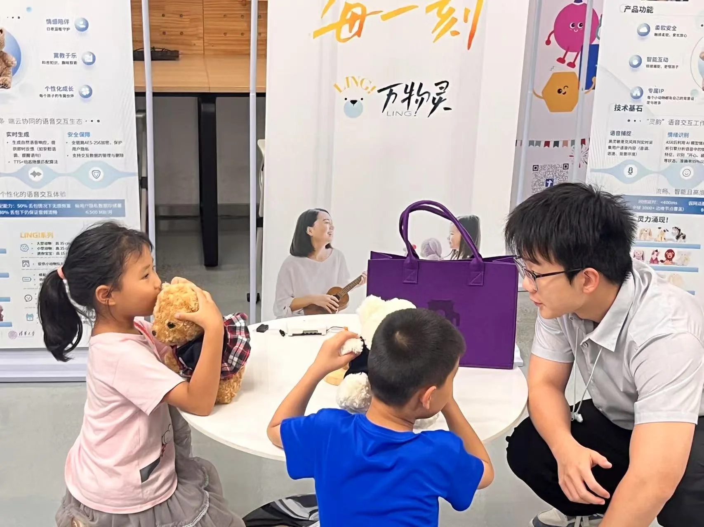
Company Credibility
面向 B 端礼赠渠道，万物智灵更重视可核验的合作材料和可持续交付能力。
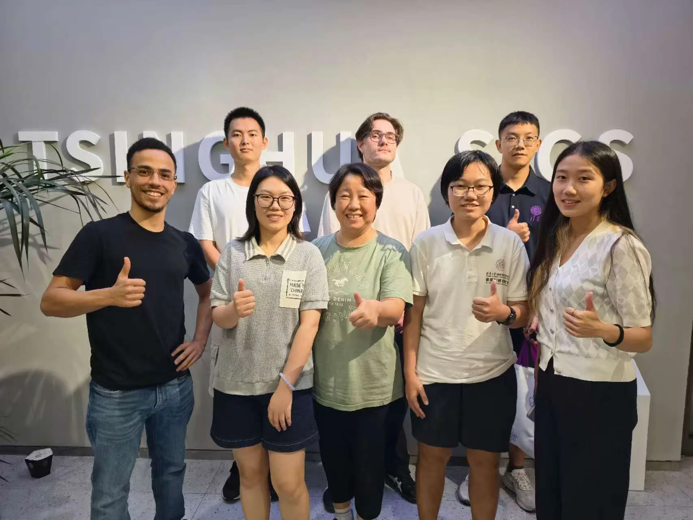
团队具备 AI 语音交互、端侧部署、硬件工程与产品交付经验，能把“好玩的互动”落到可演示样机。
已形成采购、代销、战略合作、生产合作等多类材料；合同金额、签章和主体信息可按商务阶段提供脱敏核验。
包含 WAIC 相关证书、国家算法备案材料、公开路演、展会展示和 AI+文旅赛事获奖资料。
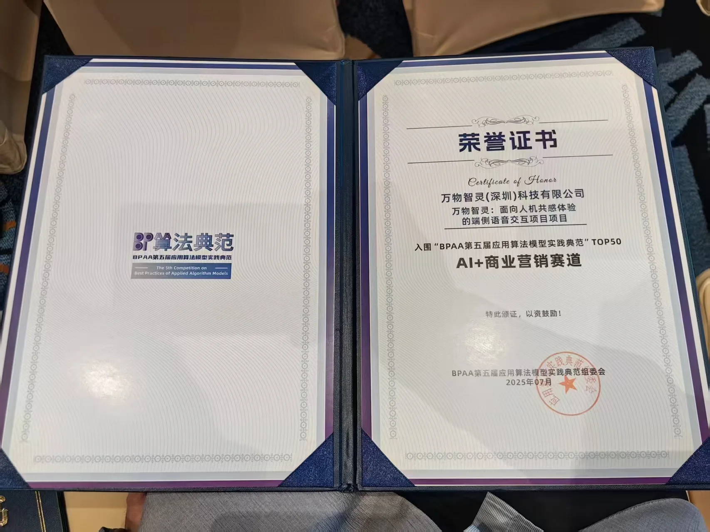
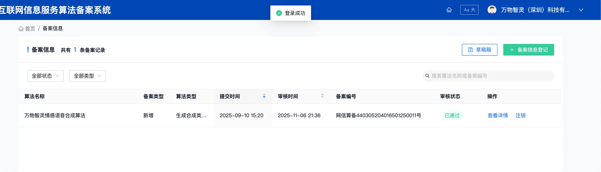
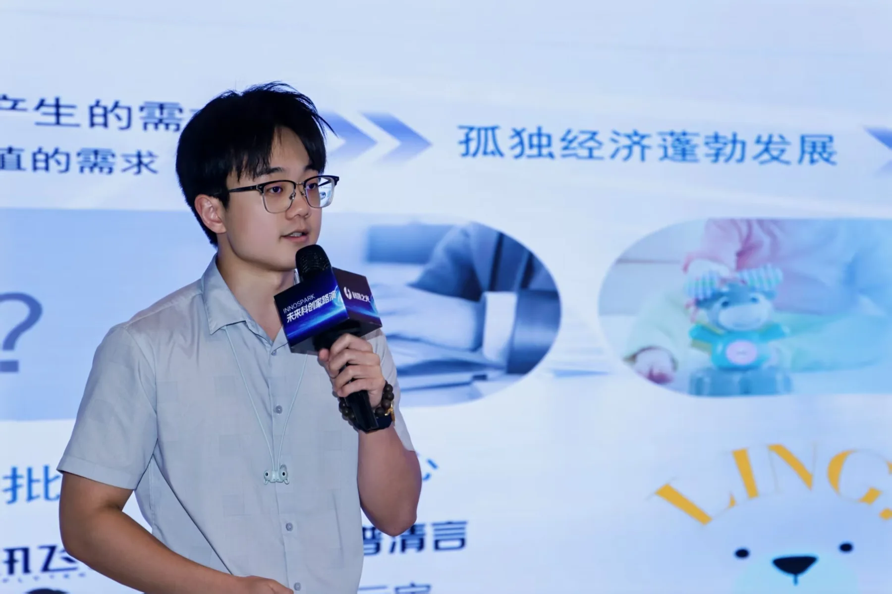
Cooperation Path
先围绕客户预算、渠道与目标人群做一款可演示、可报价、可小批量验证的产品，再决定是否扩展到更多外观和品类。
企业礼赠、会议伴手礼、儿童活动、文创周边，不同场景对应不同功能配置。
西施犬、拉布拉多犬形、客户 IP、服饰、吊牌、包装、语音欢迎词。
优先形成客户能拿在手里演示的视频素材与实物样机，而不是只停留在效果图。
根据数量、物料、功能和包装确认阶梯报价，降低渠道客户第一次合作风险。